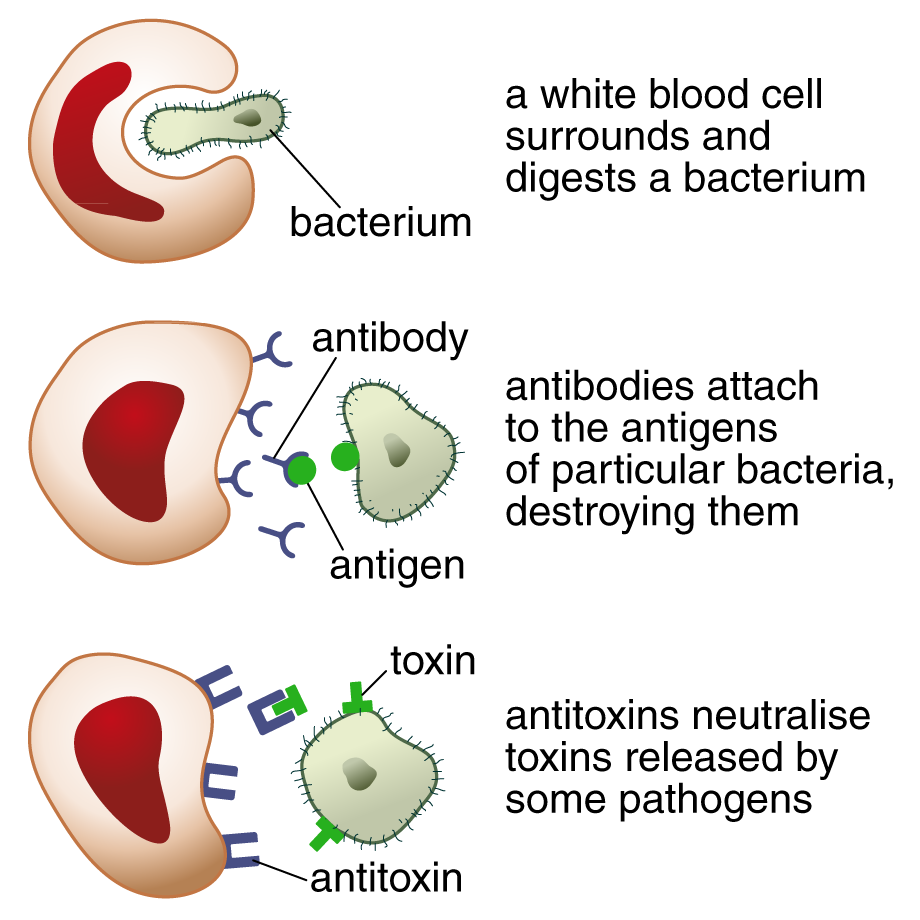

Pathogens are microorganisms (also called microbes) that cause disease. Bacteria and viruses are types of pathogens. (Edexcel/OCR: Fungi such as athlete’s foot are also pathogens.)
Bacteria are tiny single-celled organisms. Some are harmful, some are harmless and some are even useful, e.g. for making dairy foods and medicines.
Viruses are smaller than bacteria and are often simply shaped, e.g. rods or spheres. They are so small that they can even cause diseases in bacteria.
The smallpox virus – now completely eradicated from Earth by vaccination (see Section 1.4)
Disease and its causes
Diseases are abnormal conditions affecting the body. They can be infectious or inherited. They can be common and mild (e.g. a cold) or less common and serious (e.g. smallpox).
Infectious disease occurs when pathogens in our environment get into the body. They are called infectious because they can spread.
Infectious diseases spread in different ways, e.g. contaminated food/drink in the stomach; droplets in the air inhaled from someone sneezing/coughing; directly into the blood via wounds; by vectors such as mosquitos; in body fluids (e.g. HIV).
Bacteria and viruses reproduce quickly inside the body. Viruses attack cells in the body, destroying them. Bacteria multiply by dividing in two, often producing poisons (toxins) that make us feel ill. These feelings are the symptoms of illness.
Defence against microbes
Our skin, and the scabs that form when we cut ourselves, are the outermost natural protection against pathogens entering our body.
The mucus in our nose and throat traps pathogens from the air, as do lysozymes in our tears; the acid in our stomachs kills pathogens in our food and drink.
The Hungarian doctor Ignaz Semmelweiss was one of the first to recommend simple hand-washing to stop viruses and bacteria being spread in hospitals (by doctors treating different patients).
White blood cells protect us
Inside our bodies, a key defence against disease is our white blood cells. They are part of our immune system:
Antigens are markers on the outside of a microbe. These markers are unique to that pathogen; specific white blood cells in our bodies create specific antibodies for specific pathogens. There are three ways that red blood cells kill pathogens:

OCR: Memory cells are white blood cells that defend against a second infection by a pathogen; they act more quickly the second time around.
OCR: Viruses mutate very quickly; their antigens change, which is why we can catch a common illness like the flu multiple times.
OCR: In a wound, redness, swelling and pus are positive signs of dead bacteria and used white blood cells: our immune system is working well.